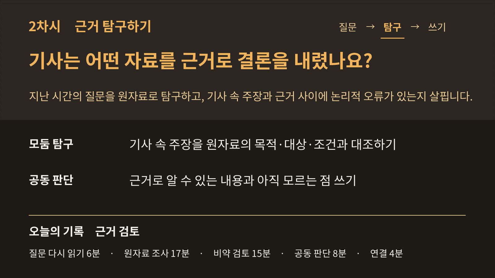
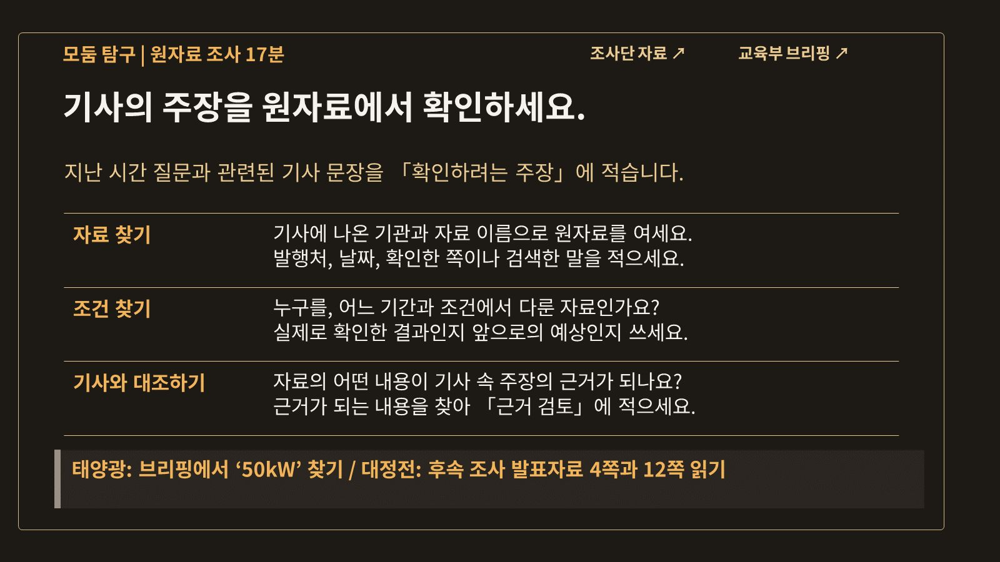
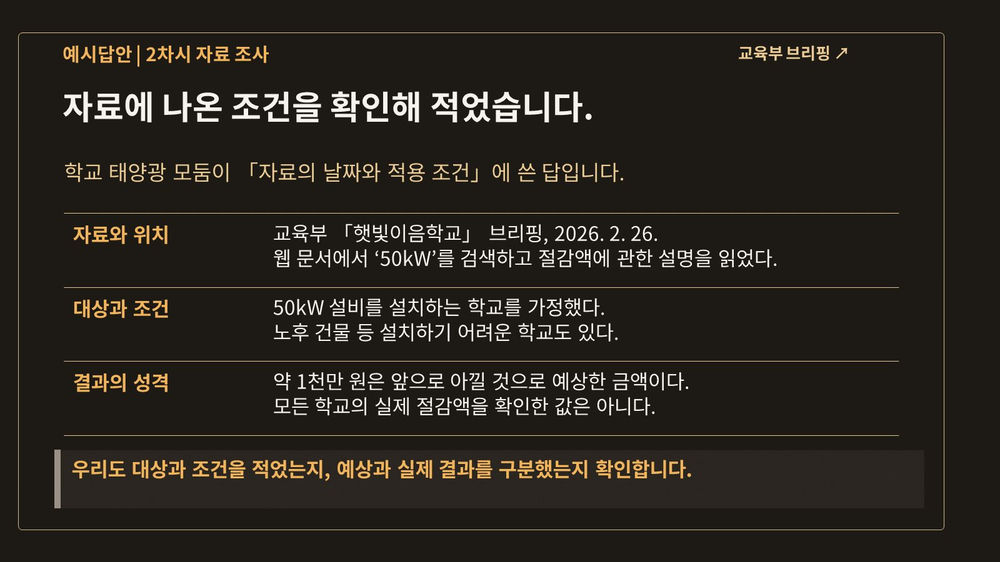
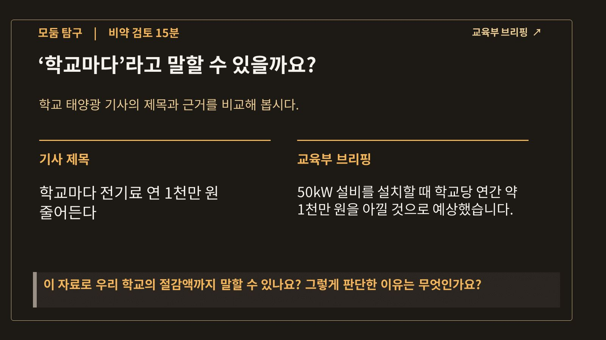
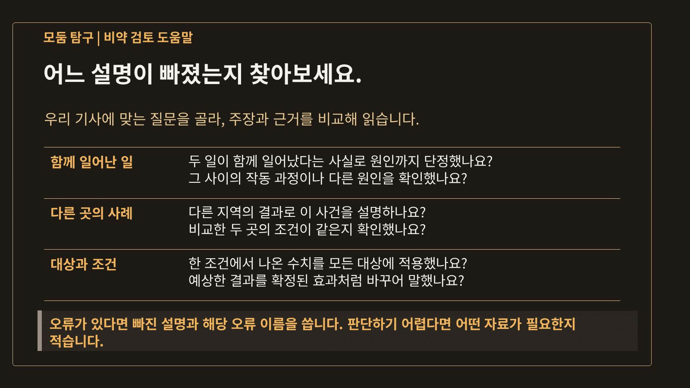
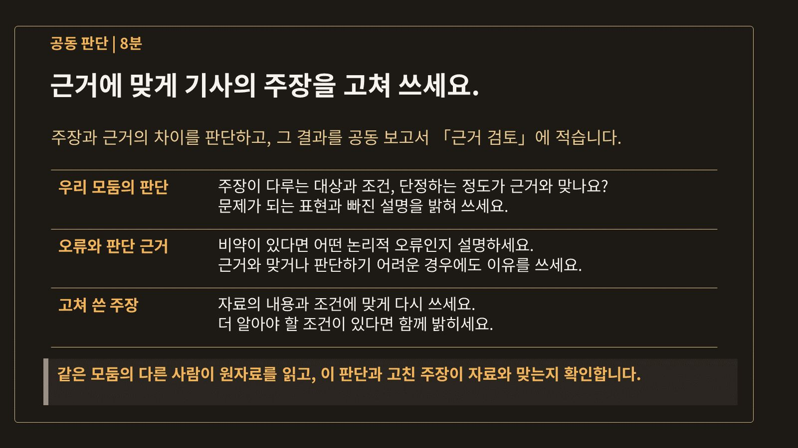
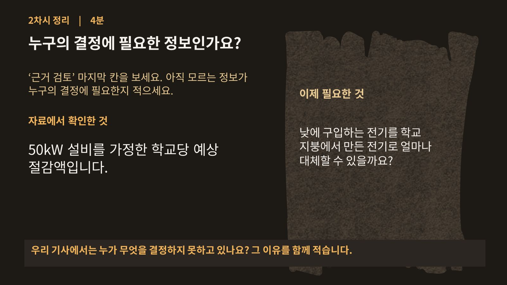
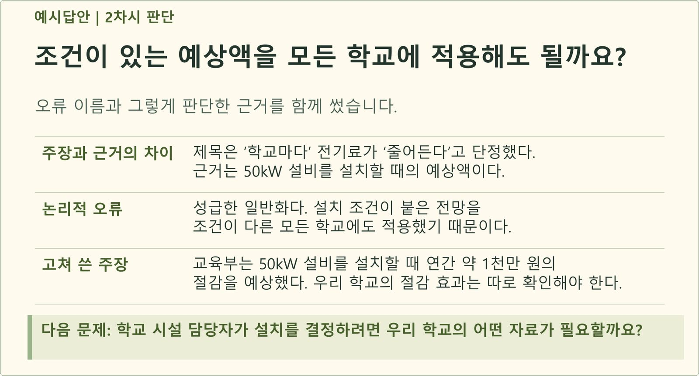

기사는 어떤 자료를 근거로 결론을 내렸나요?
오늘의 목표모둠의 질문에 맞는 원자료를 찾아 기사에 제시된 결론의 범위를 검토하고, 판단의 근거가 되는 내용과 아직 모르는 점을 구분해요.
수업 흐름
← → 키로 단계를 넘겨요. 교사 모드를 켜면 발문과 유의점이 함께 보여요.
기사는 어떤 자료를 근거로 결론을 내렸나요?
공동 보고서에서 질문이 생긴 제목이나 문장을 다시 읽어요. 기사 속 누구의 주장인지 확인하고, 예상 답을 말해 봅시다.
1차시 활동지 다시 보기 ↗
오늘의 목표
모둠의 질문에 맞는 원자료를 찾아 기사에 제시된 결론의 범위를 검토하고, 판단의 근거가 되는 내용과 아직 모르는 점을 구분해요.
기사의 주장을 원자료의 목적·대상·조건과 대조
근거만으로 결론까지 말할 수 있는지 판단
근거로 알 수 있는 내용과 아직 모르는 점 쓰기
오늘의 기록: 공동 보고서 「근거 검토」
기사의 주장을 원자료에서 확인하세요
기사에 나온 기관과 자료 이름으로 원자료를 열어요. 발행처, 날짜, 확인한 쪽이나 검색한 말을 적어요.
누구를, 어느 기간과 조건에서 다룬 자료인가요? 실제로 확인한 결과인가요, 앞으로의 예상인가요?
자료의 어떤 내용이 기사 속 주장의 근거가 되나요? 「근거 검토」에 적어요.
같은 사건을 기사와 원자료는 어떻게 다르게 다루나요? 누가 어떤 목적으로 썼는지, 글의 형식(보도·해설·발표자료)이 무엇을 앞세우는지 구절을 들어 견줘요.

태양광: 브리핑에서 ‘50kW’와 ‘전기요금’ 찾기 · 대정전: 선생님이 나누어 준 최종 조사 발표자료(영문) 4쪽·12쪽 발췌 번역본 읽기
활동지 ① 원자료 확인에 쓰기 ↓브리핑 원문의 단위 오기 주의 — 장관 발언의 “학교당 연간 68MW의 전기를 생산”은 68MWh(=68,000kWh)의 오기로 보임(MW는 순간 출력, MWh는 1년 동안 만든 전기량). 50kW × 연 약 1,360시간 ≈ 68MWh, 1,000만 원 ÷ 68,000kWh ≈ kWh당 약 147원(교육용 어림셈). 학생이 이 문장을 찾으면 ‘자료에도 오류가 있을 수 있다’는 확인 활동으로 활용 · 같은 브리핑 문답에는 설치비 학교당 약 1억 6,000만 원, 단순 회수 약 15년, 자가소비 방식(남는 전기는 팔지 않음)이 나옴 — 3차시 ‘진단 서비스’의 근거로 쓸 수 있음 (출처: 정책브리핑 교육부 「햇빛이음학교 사업 추진계획」 브리핑, 2026. 2. 26.)
먼저 끝난 모둠: 같은 사건을 다룬 다른 기사 한 편을 찾아 제목·관점을 우리 기사와 견주기
자료에 나온 조건을 확인해 적었어요
학교 태양광 모둠이 「자료의 날짜와 적용 조건」에 쓴 답 — 우리 모둠이 먼저 쓴 뒤 열어 보세요.
예시답안 펼치기
교육부 「햇빛이음학교」 브리핑, 2026. 2. 26. 웹 문서에서 ‘50kW’를 검색하고 절감액에 관한 설명을 읽었다.
50kW 설비를 설치하는 학교를 가정했다. 노후 건물 등 설치하기 어려운 학교도 있다.
약 1천만 원은 앞으로 아낄 것으로 예상한 금액이다. 모든 학교의 실제 절감액을 확인한 값은 아니다.

우리도 대상과 조건을 적었는지, 예상과 실제 결과를 구분했는지 확인해요.
도표의 화살표 하나를 따라 읽어 봅시다
ENTSO-E 전문가 조사단 최종 조사 발표자료 12쪽 · 2026. 3. 20. (도표 일부를 다시 그림)
4쪽에서 확인할 것 — 이 조사의 목적
‘학교마다’라고 말할 수 있을까요?
학교마다 전기료 연 1천만 원 줄어든다
50kW 설비를 설치할 때 학교당 연간 약 1천만 원을 아낄 것으로 예상했어요.
이 자료로 우리 학교의 절감액까지 말할 수 있나요? 그렇게 판단한 이유는 무엇인가요?
활동지 ② 비약 검토에 쓰기 ↓
어느 설명이 빠졌는지 찾아보세요
우리 기사에 맞는 질문을 골라 주장과 근거를 비교해 읽어요.
두 일이 함께 일어났다는 사실로 원인까지 단정했나요? 그 사이의 작동 과정이나 다른 원인을 확인했나요?
다른 지역의 결과로 이 사건을 설명하나요? 비교한 두 곳의 조건이 같은지 확인했나요?
한 조건에서 나온 수치를 모든 대상에 적용했나요? 예상한 결과를 확정된 효과처럼 말했나요?

빠진 설명을 먼저 말한 뒤 — 오류 이름 확인
함께 일어난 일 → 인과관계 오인 · 다른 곳의 사례 → 부적절한 유추 · 대상과 조건 → 성급한 일반화
근거에 맞게 기사의 주장을 고쳐 쓰세요
- 우리 모둠의 판단 — 주장이 다루는 대상과 조건, 단정하는 정도가 근거와 맞나요?
- 오류와 판단 근거 — 비약이 있다면 어떤 오류인지, 없거나 판단하기 어렵다면 그 이유도.
- 고쳐 쓴 주장 — 자료의 내용과 조건에 맞게. 더 알아야 할 조건도 함께.

예시답안 — 학교 태양광 모둠의 판단
주장과 근거의 차이 제목은 ‘학교마다’ 전기료가 ‘줄어든다’고 단정했다. 근거는 50kW 설비를 설치할 때의 예상액이다.
논리적 오류 성급한 일반화다. 설치 조건이 붙은 전망을 조건이 다른 모든 학교에도 적용했기 때문이다.
고쳐 쓴 주장 교육부는 50kW 설비를 설치할 때 연간 약 1천만 원의 절감을 예상했다. 우리 학교의 절감 효과는 따로 확인해야 한다.
누구의 결정에 필요한 정보인가요?
50kW 설비를 가정한 학교당 예상 절감액이에요.
낮에 구입하는 전기를 학교 지붕에서 만든 전기로 얼마나 대체할 수 있을까요?
우리 기사에서는 누가 무엇을 결정하지 못하고 있나요? 다음 시간에 제안할 문제와 독자를 적어요.

(교사 참고 · 대정전 모둠의 질문에 대비) ENTSO-E 전문가 조사단 최종 보고서(2026. 3. 20.)는 과전압을 제어하지 못한 것을 핵심으로 보되 “하나의 근본 원인이 아니라 여러 핵심 요인의 결합”이라고 결론 내렸고(발표자료 12쪽), 책임을 가리는 보고서가 아니라고 밝혔음(4쪽). 특정 발전원 탓으로 돌리지 않았음 · 이 사례는 에너지안보(전력계통 안정성) 주제로 이어짐
활동지
공동 보고서 ② 근거 검토
여기에 쓴 내용은 이 기기의 브라우저에만 저장돼요. 차시가 끝나면 아래 「내 기록 모두 복사」로 모둠 공유 문서에 붙여 두세요.
1원자료 확인
2비약 검토
3공동 판단
모둠 판단을 마친 뒤 — 2차시 예시답안 보기

근거 검토와 오류 판단 — 2차시 예시답안 (최종보고서 · 수업 PPT 28장)
이 차시 슬라이드
수업 PPT 21~29장 · 전체 47장과 PPTX·PDF 내려받기는 프로그램 페이지에 있어요.
나가기 질문
오늘 확인한 정보는 누구의 결정에 필요한가요? 다음 시간에 제안할 문제와 독자를 한두 문장으로 써요.